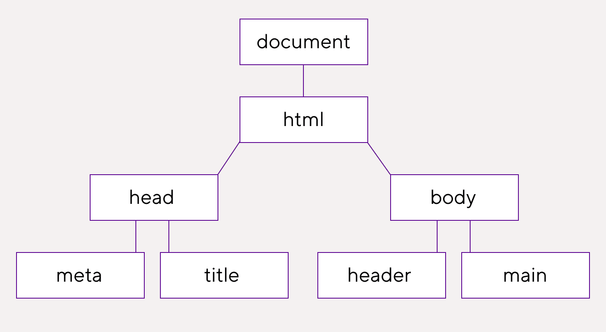

Selectors(css)
Селекторы — это шаблоны, которые используются для привязки стилевых свойств к элементам в документе. Вы
можете задать стиль для всех элементов или сократить выбор с помощью определённого селектора.
Oсновные селекторы:
- Селекторы типа выбирают элементы HTML-документа по их тегу. Например, селектор p выберет все
<p> на странице
- Селекторы класса определяют стиль элементов с определённым классом(class/.class).
- Селекторы идентификатора выбирают элемент по его уникальному идентификатору(id/#id).
- Селекторы наличия и значения атрибута находят все элементы, которые имеют определённый атрибут или
значение атрибута
- Универсальный селектор позволяет прописать стили для всех элементов HTML без исключения. Он указывается
в виде звёздочки *.
Селекторы-комбинаторы
Комбинаторы выбирают элементы, основываясь на их взаимосвязи в дереве DOM. Можно выбрать элементы, которые
являются потомками, соседями или родителями других элементов.

- Соседний родственный комбинатор - Записывается как селектор1 + селектор2. Выбирает элемент, подходящий
под селектор2, перед которым расположен элемент, подходящий под селектор1.
- Дочерний комбинатор - Записывается как селектор1 > селектор2. Выбирает элементы, которые являются
прямыми потомками элемента, подходящего под селектор1.
- Общий родственный комбинатор - Записывается как селектор1 ~ селектор2. Добавляет стили для элемента,
который соответствует селектор2, если перед ним стоит элемент, подходящий под селектор1. Оба элемента
должны принадлежать одному родителю.
- Комбинатор потомка - Записывается как селектор1 селектор2. Находит все потомки элемента, который
подходит под селектор1, и применяет к ним стили.
Комбинаторы, такие как прямой потомок(>), соседние элементы (+) и общие соседи (~), позволяют выбирать
элементы на основе их взаимоотношений. Например, ul > li { list-style-type: none; } уберёт маркеры списка
для всех непосредственных потомков ul.
Группировка селекторов через запятую позволяет применять одни и те же стили к разным элементам. Пример: h1,
h2, h3 { font-family: Arial, sans-serif; } применит один и тот же шрифт к заголовкам трёх уровней.
Селекторы псевдоклассов
:first-child, :last-child и :nth-child(n) - Эти псевдоклассы выбирают элемент по его порядковому номеру.
:first-child соответствует первому дочернему элементу родителя, :last-child — последнему. А псевдокласс
:nth-child(n) указывает на n-й дочерний элемент. Например, с его помощью можно выбрать второй, пятый или
предпоследний элемент. Вместо n в скобках указывается целое число или математическое выражение.
:first-of-type, :last-of-type и :nth-of-type(n) - Эти псевдоклассы похожи на предыдущие. Они тоже выбирают
элемент по его порядковому номеру, но только с учётом типа — тега.
Вес селекторов
| селекторы |
вес |
| теги |
1 |
| классы |
10 |
| id |
100 |
| встроенные стили |
1000 |